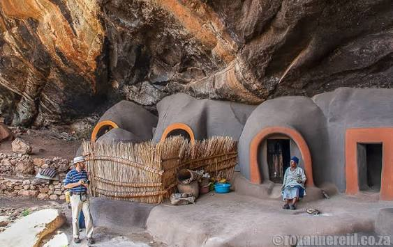
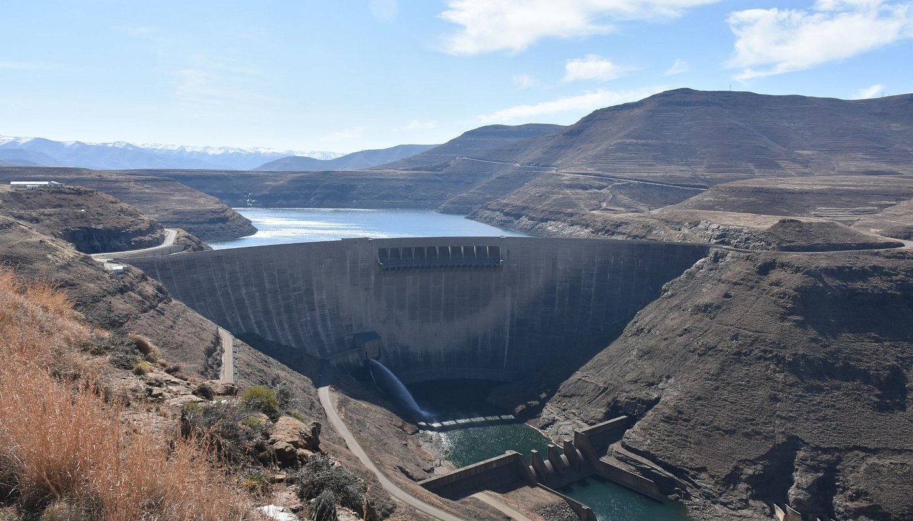
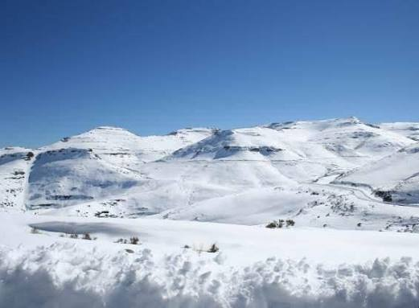

Waterfall
Maletsunyane Waterfall is one of the most beautiful places in Lesotho. Visitors go there to enjoy the scenery, take pictures, go hiking and ride Basotho ponies through nearby mountains and villages.
Maletsunyane Waterfall is one of the most beautiful places in Lesotho. Visitors go there to enjoy the scenery, take pictures, go hiking and ride Basotho ponies through nearby mountains and villages.

Ha Kome is a special historical place where people can see houses built inside caves. Visitors go there to learn about Basotho history, explore the caves and discover more about our traditions.

Katse Dam is surrounded by beautiful mountains and valleys. Visitors enjoy the amazing views, take photographs and experience boat cruises on the large reservoir.

Maluti Mountains are beautiful mountains that attract many visitors, especially in winter. Tourists can enjoy the snow and experience the beautiful mountain scenery.